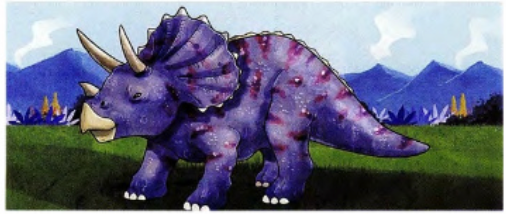

Example: Dinosaurs lived on our planet 65,000,000 years ago! The first dinosaurs 1 like big lizards. Many of them had short tails, big heads 2 walked on four legs. Most dinosaurs were herbivores, which means that they only ate plants. Some of these dinosaurs were very 3 but other kinds of dinosaur were bigger and heavier and were carnivores, which means that they ate meat.
Dinosaurs lived 4 warm forests where there were lots and lots 5 plants and water. But about 60,000,000 years ago, some people say 6 weather on Earth suddenly got colder and drier. Many plants 7 dinosaurs liked to eat stopped growing, which was a terrible problem for these animals, so soon dinosaurs disappeared too.
Today, people sometimes 8 dinosaur teeth in rocks or under the ground. Dinosaurs are now extinct, but you can learn about 9 in special science museums or when you watch scary dinosaur films 10 TV.
Choose the correct word for gap 1
Excellent!
Bạn đã hoàn thành xuất sắc bài tập đọc hiểu về Khủng long.